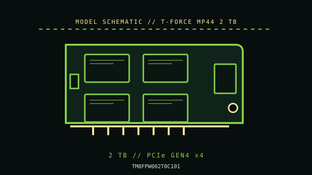

[ PCIE 4.0 NVME DRIVES // IDENTIFIED PRODUCT ]
TEAMGROUP T-FORCE MP44 2 TB (TM8FPW002T0C101)
2 TB M.2 2280 client drive in TEAMGROUP’s T-FORCE MP44 family, rated for PCIe 4.0 x4 NVMe. It is distinct from the MP44L and the lower-profile MP44S designs. Performance values are manufacturer-rated maxima, not independent test results.

IDENTIFICATION: Verify the complete MPN, regional suffix, serial/date code and firmware from the drive label. Capacity variants, hardware revisions and cooling bundles can differ; the specifications below are for T-FORCE MP44 2 TB where the cited manufacturer documentation identifies them.
Manufacturer-identified specifications
| Product / MPN | TEAMGROUP T-FORCE MP44 2 TB (TM8FPW002T0C101); manufacturer code TM8FPW002T0C101. |
|---|---|
| Capacity / form factor | 2 TB; M.2 2280 (22 × 80 mm), single module. Confirm sidedness and surrounding component clearance from the exact revision. |
| Interface / lane width | PCIe 4.0 x4 NVMe; link speed is host-negotiated and can be lower on older hardware. |
| Protocol / flash | NVMe over PCI Express; manufacturer identifies this product as a client M.2 SSD. Use the exact product document for protocol revision, NAND and any DRAM/HMB details. |
| Rated sequential performance | up to 7,400 MB/s read and 7,000 MB/s write (manufacturer series maximum; check the exact SKU datasheet). Ratings depend on capacity, firmware, workload and the test conditions published by the manufacturer. |
| Endurance / warranty | Consult the current 2 TB specification sheet for rated TBW and warranty; do not apply ratings from the separate MP44L or MP44S models. |
| Model generation / thermal package | 2023 product generation. TM8FPW002T0C101; 2 TB, M.2 2280. This entry does not describe the similarly named MP44L or MP44S. |
Compatibility, installation & service
- Use a PCIe/NVMe M.2 socket with x4 support; an M.2 SATA-only socket will not work. Check double-sided clearance and confirm thermal-pad fit: the thin graphene label is not a substitute for a board heatsink under all workloads. The product name is close to MP44L/MP44S, so verify the full TM8FPW002T0C101 code before applying installation guidance.
- Read the motherboard or laptop service manual to check socket keying, supported protocol, PCIe generation/lane count, shared SATA/PCIe lanes, BIOS boot support, standoff position, module sidedness and cover clearance. M.2 is a form factor, not proof that a socket supports NVMe.
- Back up data and retain recovery media and encryption keys before replacement or firmware service. Use only the manufacturer utility/firmware intended for the exact model and capacity; confirm power and system stability during updates.
- Follow the host’s service procedure, shut down and disconnect standby power when instructed, and use electrostatic-discharge precautions. Do not hot-plug a client M.2 SSD unless the platform manual explicitly supports it.
- Monitor SMART health and temperature during sustained transfers. High burst benchmarks do not predict sustained writes, thermals, or service life; keep independent backups regardless of the TBW rating.
Sources & further reading
- TEAMGROUP T-FORCE MP44 — official product family pageThe TEAMGROUP page documents the product family; the secondary model database cross-identifies the 2 TB MPN. Verify current speed/TBW ratings from the manufacturer for exact revisions. Original page is gone; this is the Internet Archive’s copy.
- TechPowerUp SSD database — MP44 2 TB model identificationTechnical reference for the listed model or the NVMe storage interface; confirm current revision and regional SKU notes with the manufacturer before service.
Rated figures are not guarantees of sustained throughput in every host. Check the current manufacturer datasheet, installation guidance and warranty terms before deployment.